Notes on honest evaluation
Short write-ups on the part of machine learning that doesn't fit in a leaderboard: leakage, baselines, and why a good number is usually wrong until proven otherwise.
Continuous Retraining on a Schedule Can Be a Trap
A retraining cadence is not a monitoring strategy. Here is why scheduled retraining can mask drift, hide bugs, and quietly erode trust in your pipeline.
18 Aug 2026 Read →MLOps for a Team of One: What to Automate First
You cannot automate everything as a solo practitioner. Here is the order that actually saves time: data checks, then retraining, then serving, then monitoring.
17 Aug 2026 Read →Setting Up Your First MLOps Project on a Laptop
Cloud infrastructure will not fix a badly designed pipeline. Build the habits first, on your laptop, then scale.
17 Aug 2026 Read →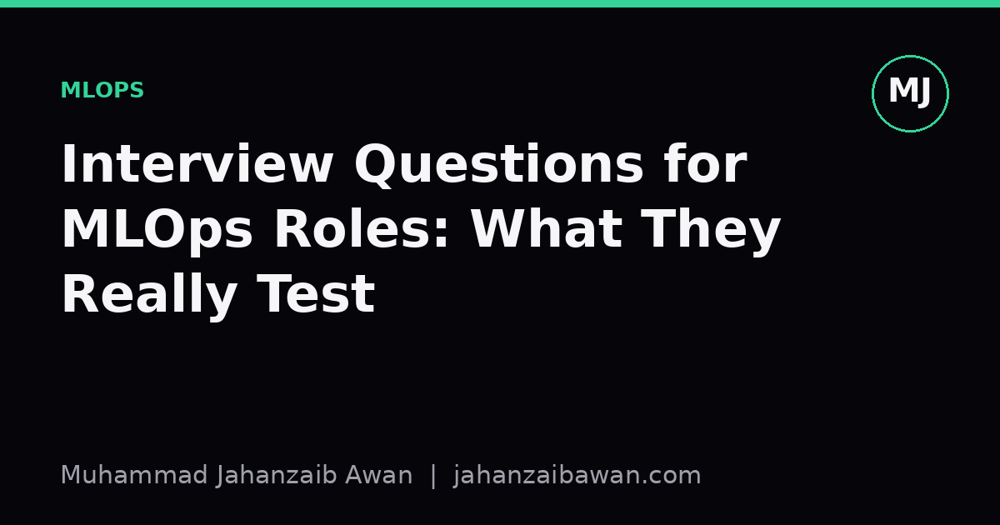
Interview Questions for MLOps Roles: What They Really Test
MLOps interviews rarely test frameworks. They test whether you understand failure, reproducibility, and who gets paged at 3am.
16 Aug 2026 Read →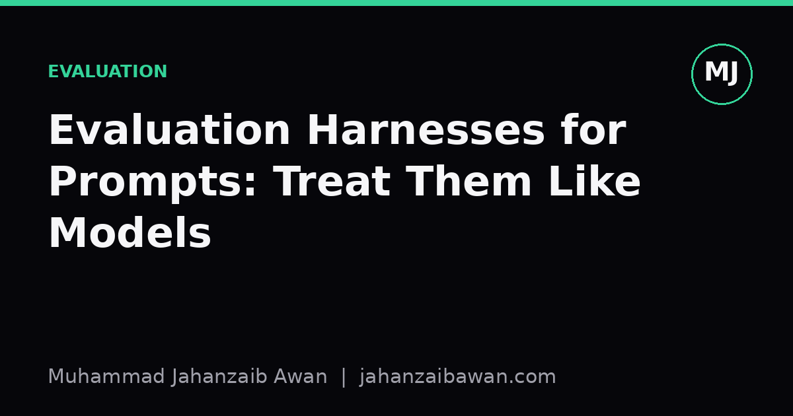
Evaluation Harnesses for Prompts: Treat Them Like Models
Prompt edits change behaviour just like model swaps do. Here is why they deserve the same evaluation discipline.
16 Aug 2026 Read →Chain-of-Thought Prompting: When It Helps, When It Hurts
Chain-of-thought prompting boosts performance on some tasks and quietly degrades it on others. I unpack the mechanism, a worked example, and when to skip it.
15 Aug 2026 Read →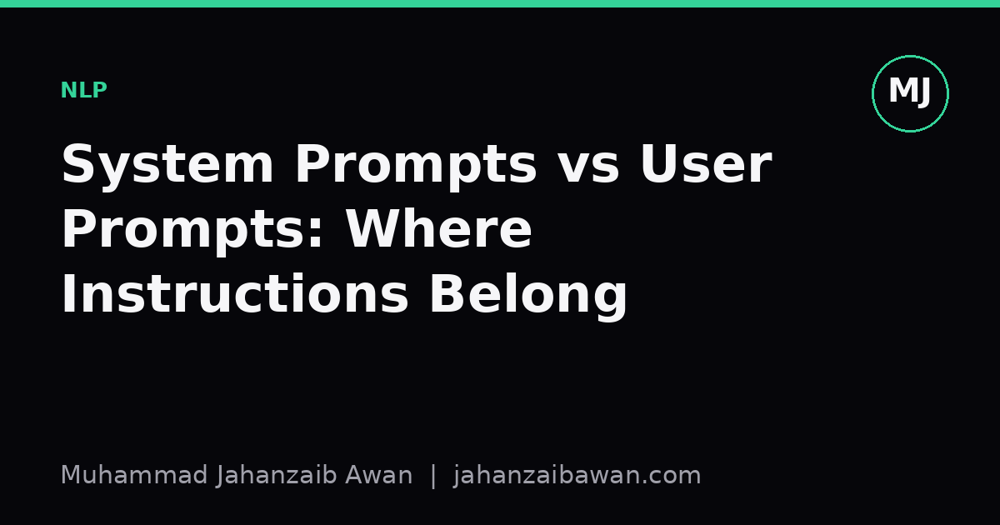
System Prompts vs User Prompts: Where Instructions Belong
System prompts and user prompts are not interchangeable containers. Where you put an instruction changes how reliably a model follows it.
15 Aug 2026 Read →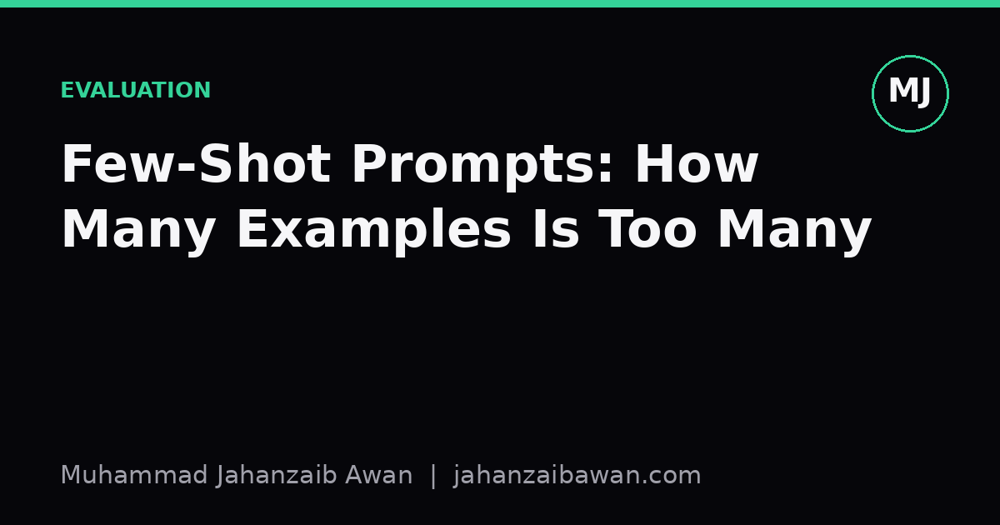
Few-Shot Prompts: How Many Examples Is Too Many
Adding more few-shot examples feels safe, but past a point it wastes tokens, biases outputs, and can quietly hurt accuracy.
14 Aug 2026 Read →Structured Prompt Templates: Stop Guessing, Start Repeating
Ad hoc prompting doesn't scale. A structured template with fixed slots makes prompting testable, versionable, and far easier to debug.
14 Aug 2026 Read →Building a Case Study a Hiring Manager Will Actually Read
A hiring manager gives your portfolio ten seconds. Structure your case study so it earns the next ninety.
13 Aug 2026 Read →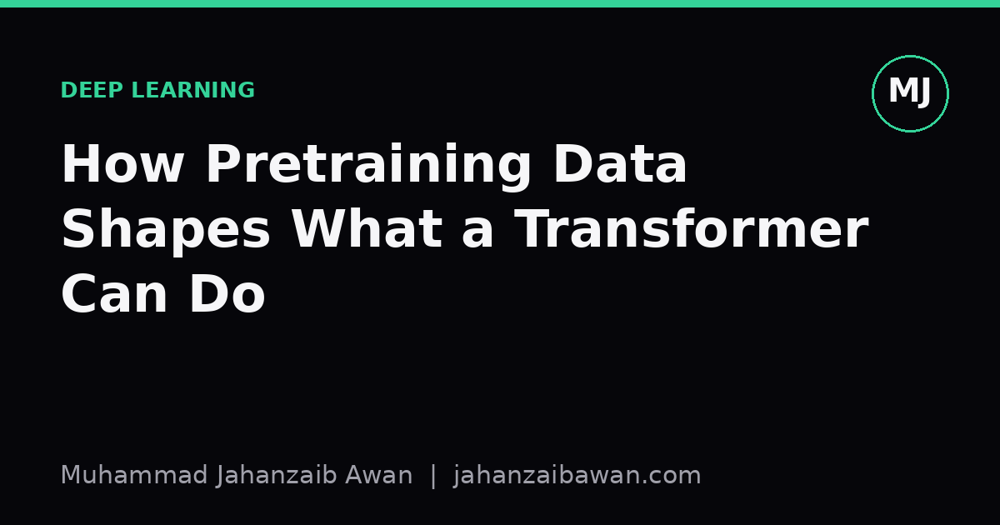
How Pretraining Data Shapes What a Transformer Can Do
Architecture gets the credit, but pretraining data quietly decides what a transformer can ever learn to do well.
13 Aug 2026 Read →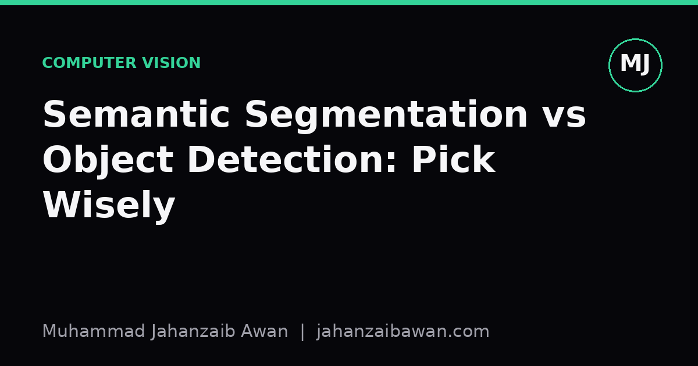
Semantic Segmentation vs Object Detection: Pick Wisely
Segmentation and detection both find objects, but they cost and deliver very different things. Here is how to choose without guessing.
12 Aug 2026 Read →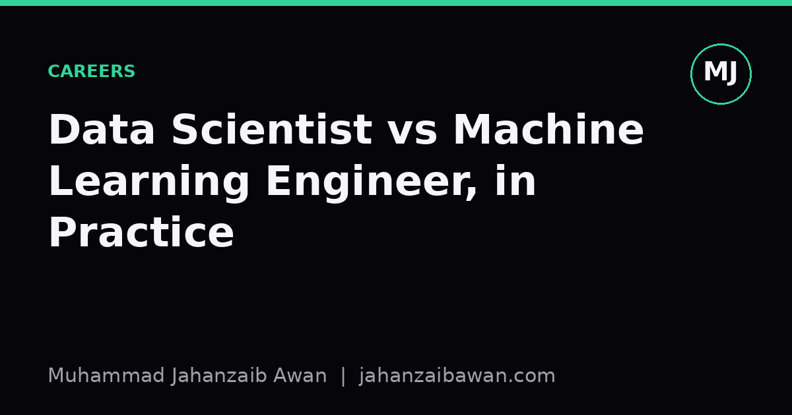
Data Scientist vs Machine Learning Engineer, in Practice
Same buzzwords, different jobs. Here's what actually separates data science from ML engineering once you look past the job title.
12 Aug 2026 Read →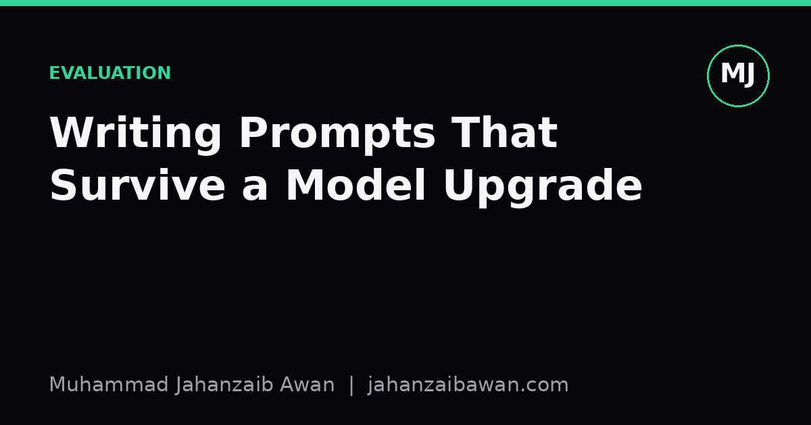
Writing Prompts That Survive a Model Upgrade
Clever prompt tricks decay fast. Here is how to write prompts that keep working when the underlying model changes.
11 Aug 2026 Read →A Realistic MLOps Syllabus: What To Learn First
Before you call yourself an MLOps engineer, learn what actually breaks in production: data drift, silent leakage, and pipelines nobody can reproduce.
11 Aug 2026 Read →Choosing Your First Computer Vision Project Wisely
Skip the trendy demo. Pick a computer vision project small enough to finish and honest enough to teach you where things actually go wrong.
10 Aug 2026 Read →Salary Expectations in Data Science: The Untold Work
Salary surveys flatten wildly different jobs into one number. Here is what the figure hides about the actual work.
10 Aug 2026 Read →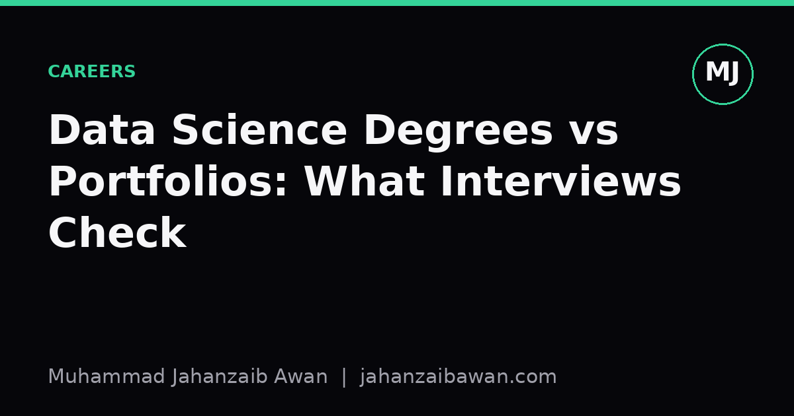
Data Science Degrees vs Portfolios: What Interviews Check
Degrees and portfolios both signal something, but interviews test neither directly. Here is what actually gets checked.
9 Aug 2026 Read →How to Read a Confusion Matrix Class by Class
A model with 94% accuracy can still be useless for the one class you care about. Learn to read confusion matrices row by row, not just the headline number.
9 Aug 2026 Read →Computer Vision Syndrome vs Evaluating Computer Vision Models
Computer vision syndrome is eye strain from screens. Model evaluation is how we judge vision systems. Same name, nothing else in common, and the confusion teaches a lesson about precision.
8 Aug 2026 Read →The Prompt Engineering Skill Set: What Transfers
Prompt tricks age fast, but the underlying skills of decomposition, evaluation and constraint design do not. Here is how to tell the difference.
8 Aug 2026 Read →MLOps Tools Compared: Ten Users Versus Ten Thousand
Most MLOps advice is written for scale you don't have yet. Here's a leakage-aware, honest guide to what to adopt at ten users versus ten thousand.
7 Aug 2026 Read →Positional Encodings: Why Transformers Need Them at All
Self-attention is permutation-invariant by default. Without positional encodings, a transformer literally cannot tell 'dog bites man' from 'man bites dog'.
7 Aug 2026 Read →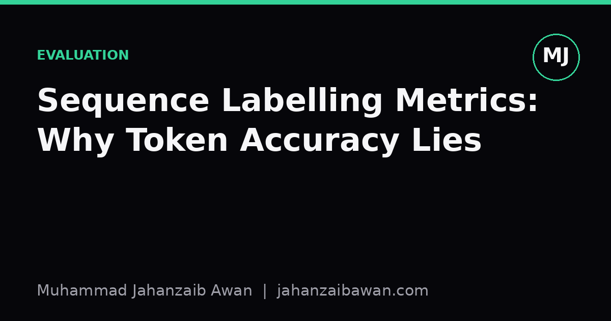
Sequence Labelling Metrics: Why Token Accuracy Lies
High token accuracy on sequence labelling tasks can mask a much worse entity-level error rate. Here's the arithmetic that proves it.
5 Aug 2026 Read →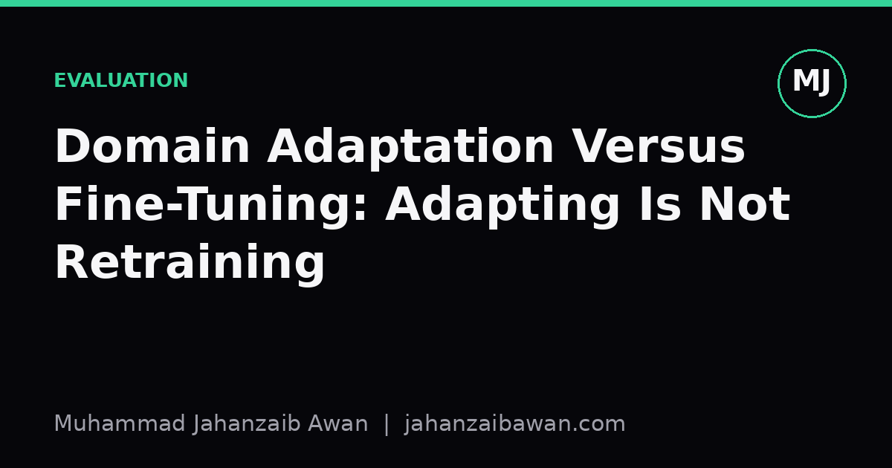
Domain Adaptation Versus Fine-Tuning: Adapting Is Not Retraining
Fine-tuning a model on new data is not the same as adapting it to a new domain. The difference decides whether your reported gains survive contact with reality.
5 Aug 2026 Read →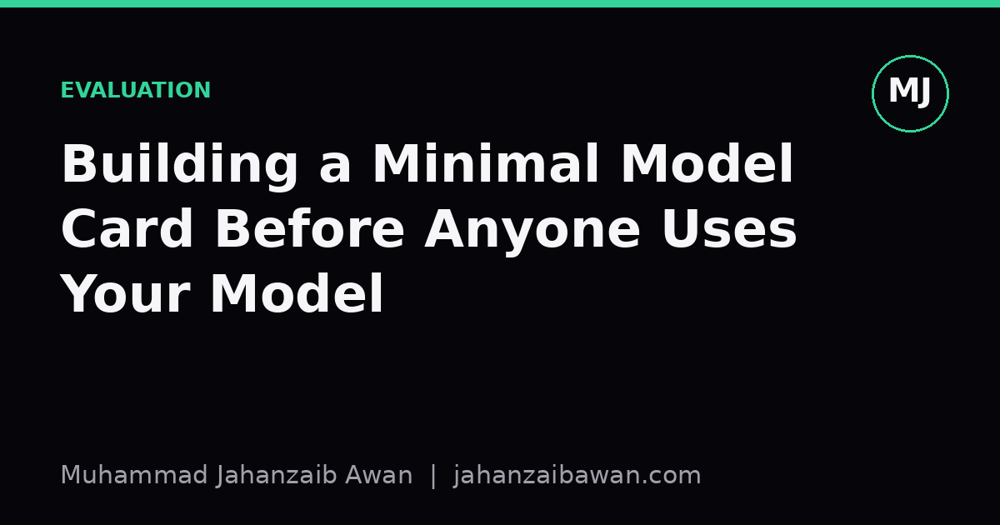
Building a Minimal Model Card Before Anyone Uses Your Model
Before anyone downloads your model, tell them what it was trained on, how it was evaluated, and where it breaks. Here is the minimal version that actually gets written.
4 Aug 2026 Read →The Actual Skills That Get You Hired as an ML Engineer
Hiring for ML engineering rewards rigorous evaluation and shipping discipline, not the fanciest model architecture on your CV.
4 Aug 2026 Read →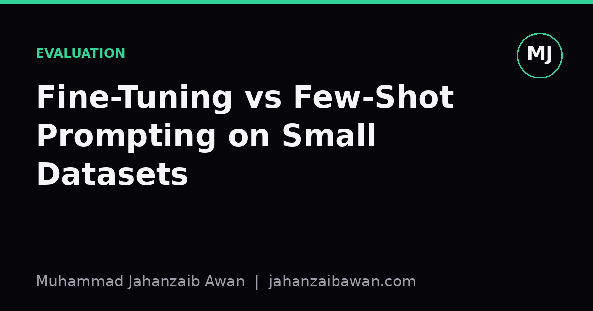
Fine-Tuning vs Few-Shot Prompting on Small Datasets
With small labelled datasets, fine-tuning and few-shot prompting fail differently. Here's how to choose, and how to evaluate the choice honestly.
3 Aug 2026 Read →Macro, Micro, and Weighted Averages Explained Properly
Accuracy lies when classes are imbalanced. I walk through macro, micro, and weighted F1 with real numbers so you know which one to trust.
3 Aug 2026 Read →Choosing a Pretrained Transformer: Size, Licence, Context
Model choice is a systems decision, not a leaderboard lookup. Here is how size, licence, and context length interact in practice.
2 Aug 2026 Read →Cross-Validation Folds for Grouped Data: Silent Leakage
Random folds leak when data has groups: patients, users, sessions. Here's why the fix is grouped splitting, not more data.
2 Aug 2026 Read →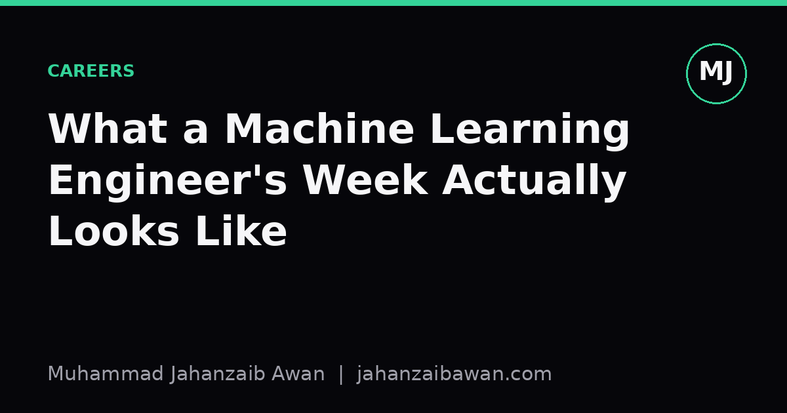
What a Machine Learning Engineer's Week Actually Looks Like
The job is less 'train a model' and more data cleaning, evaluation design, and stopping silent failures before they reach production.
1 Aug 2026 Read →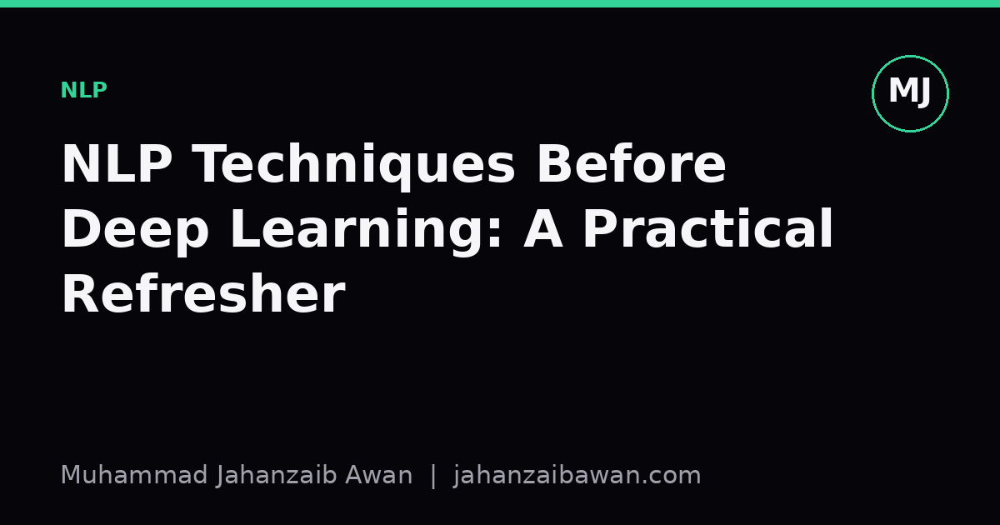
NLP Techniques Before Deep Learning: A Practical Refresher
Classic NLP methods still catch leakage, expose weak baselines and explain model behaviour better than most deep nets ever will.
1 Aug 2026 Read →Designing an Evaluation Harness Before You Know the Job
A practical guide to building leakage-aware, adaptable evaluation harnesses for models whose final job is not yet fully defined.
31 Jul 2026 Read →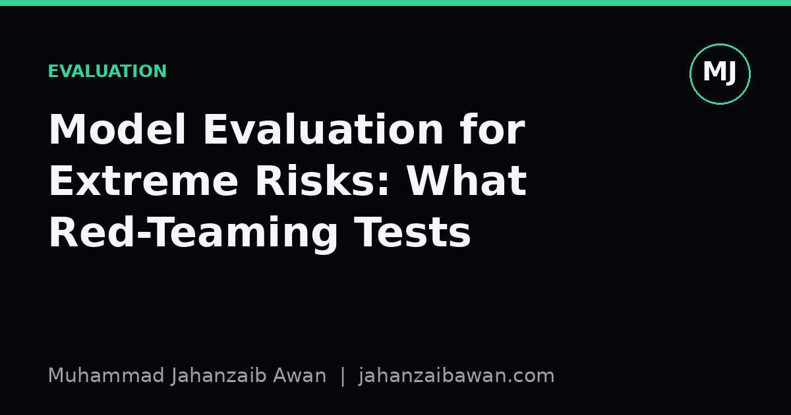
Model Evaluation for Extreme Risks: What Red-Teaming Tests
Red-teaming finds failures; it does not bound risk. Here is what it actually measures, with a worked example showing why absence of evidence is not evidence of absence.
31 Jul 2026 Read →The Transformer Architecture, Explained Without the Maths
A no-equations tour of transformers: what attention actually does, why position matters, and why the architecture scaled so well.
30 Jul 2026 Read →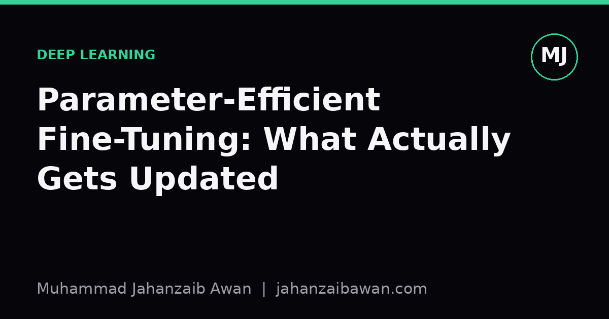
Parameter-Efficient Fine-Tuning: What Actually Gets Updated
A worked look at how adapters and LoRA fine-tune large models by updating a small slice of parameters, and why that matters for real projects.
30 Jul 2026 Read →The Cost Matrix Nobody Writes Down
Most models are trained to minimise a generic loss while the business quietly cares about wildly asymmetric costs. Here is how to fix that mismatch.
29 Jul 2026 Read →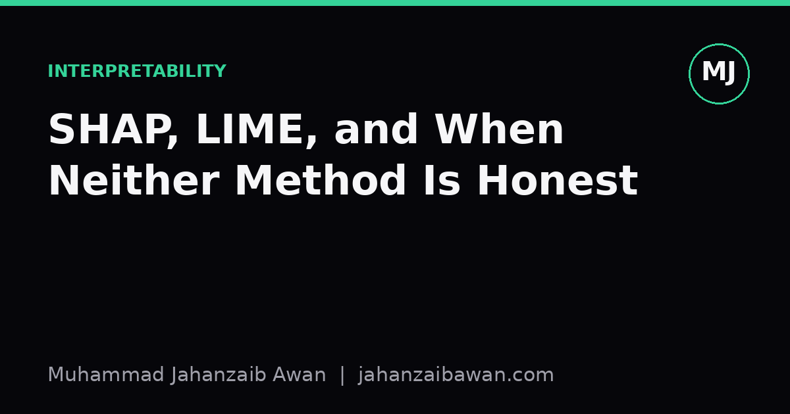
SHAP, LIME, and When Neither Method Is Honest
SHAP and LIME answer different questions dressed up as the same question. Knowing the difference is the line between insight and false confidence.
29 Jul 2026 Read →When Is a Model Good Enough to Ship? Beyond Accuracy
Accuracy alone can't tell you if a model is safe to deploy. Here's how to set real thresholds around cost, calibration, and failure modes before you ship.
28 Jul 2026 Read →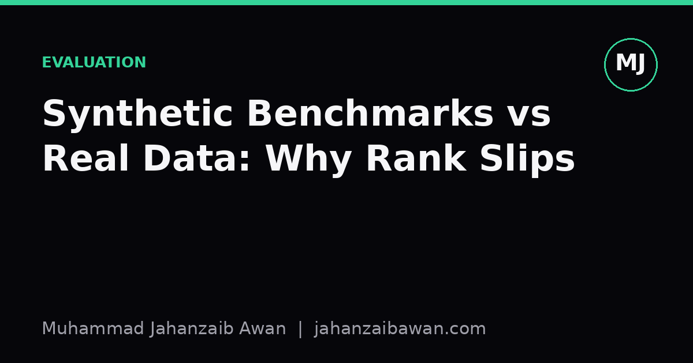
Synthetic Benchmarks vs Real Data: Why Rank Slips
Topping a leaderboard tells you about the leaderboard. It rarely tells you what happens when your model meets the messy world.
28 Jul 2026 Read →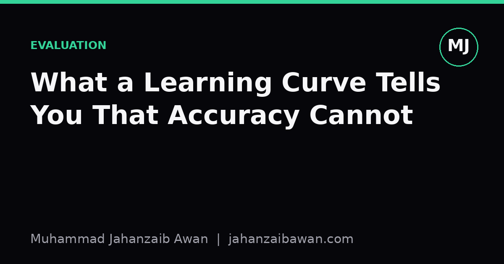
What a Learning Curve Tells You That Accuracy Cannot
One accuracy score tells you where you are. A learning curve tells you why, and what to do about it.
27 Jul 2026 Read →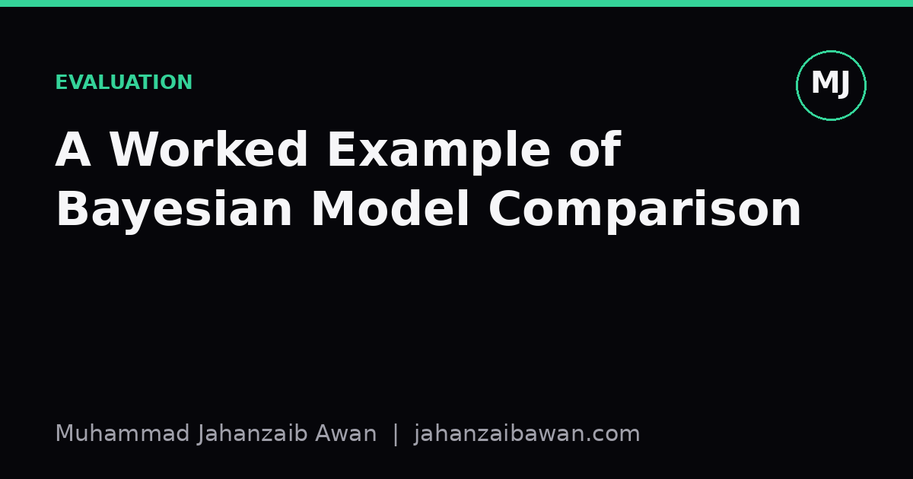
A Worked Example of Bayesian Model Comparison
A concrete walkthrough of Bayesian model comparison, showing how Bayes factors give a richer answer than a single p-value ever can.
27 Jul 2026 Read →Time Series Cross-Validation: Why Shuffled Folds Ruin Everything
Shuffling time series folds lets the future leak into training, inflating validation scores and hiding models that will fail in production.
26 Jul 2026 Read →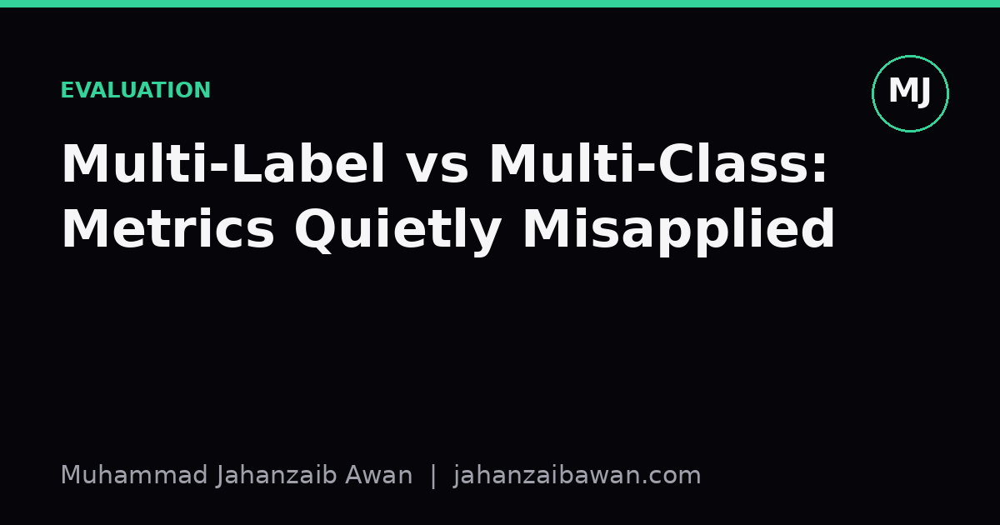
Multi-Label vs Multi-Class: Metrics Quietly Misapplied
Multi-class metrics silently misused on multi-label problems produce numbers that look fine and mean almost nothing.
26 Jul 2026 Read →Ablation Studies: Isolating What Actually Helped
A new module, a new loss, a better score: but which change actually mattered? Ablations tell you, if you design them properly.
25 Jul 2026 Read →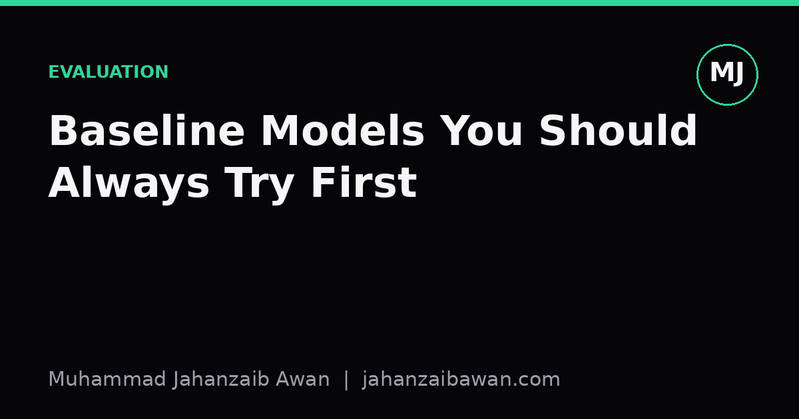
Baseline Models You Should Always Try First
A strong baseline is not a formality, it is the number every fancy model must beat to justify its cost.
25 Jul 2026 Read →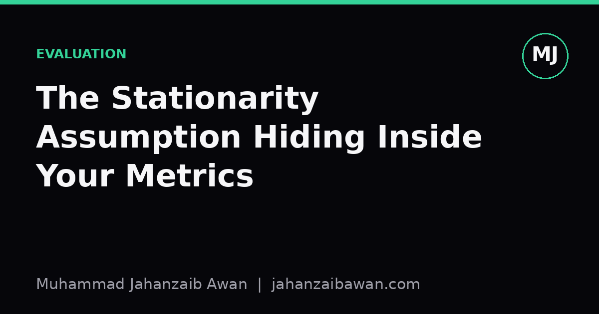
The Stationarity Assumption Hiding Inside Your Metrics
Accuracy, AUC and their friends all assume tomorrow looks like today. I unpack that assumption and show, with numbers, how quietly it can fail.
24 Jul 2026 Read →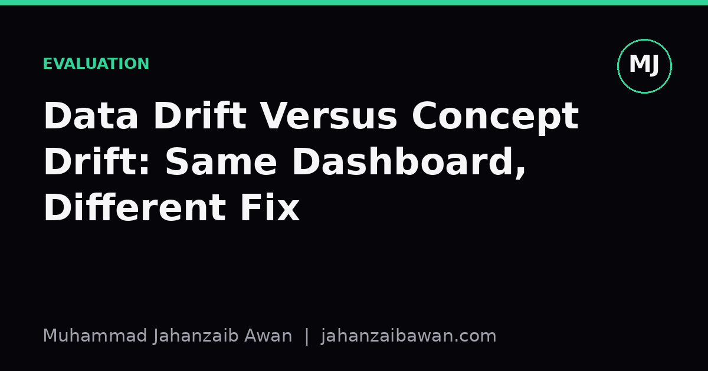
Data Drift Versus Concept Drift: Same Dashboard, Different Fix
Your model's accuracy dropped and the input distribution shifted too. That doesn't mean the shift caused the drop. Here's how to tell drift types apart.
24 Jul 2026 Read →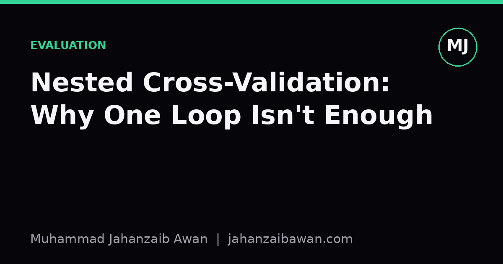
Nested Cross-Validation: Why One Loop Isn't Enough
One CV loop for both tuning and evaluation leaks information. Nested CV separates the two jobs and gives you an honest estimate of generalisation.
23 Jul 2026 Read →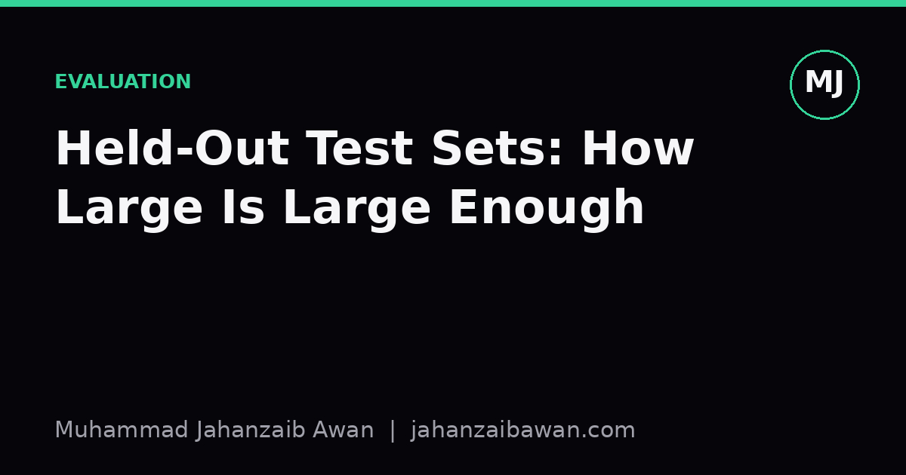
Held-Out Test Sets: How Large Is Large Enough
A test accuracy of 91% means little without knowing how many examples it was measured on. Here is the maths behind that intuition.
23 Jul 2026 Read →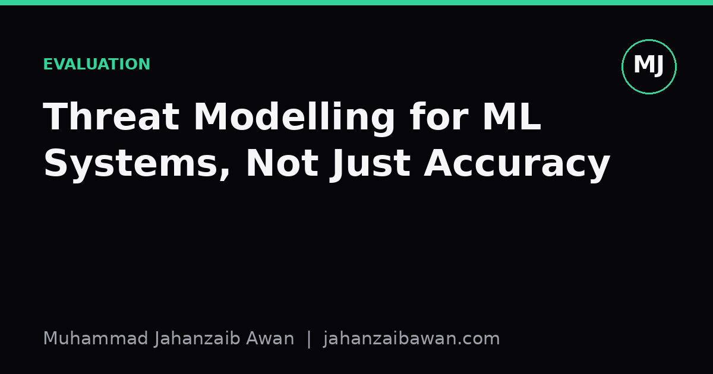
Threat Modelling for ML Systems, Not Just Accuracy
High accuracy hides where a model breaks. Threat modelling forces you to ask how it fails, for whom, and at what cost.
22 Jul 2026 Read →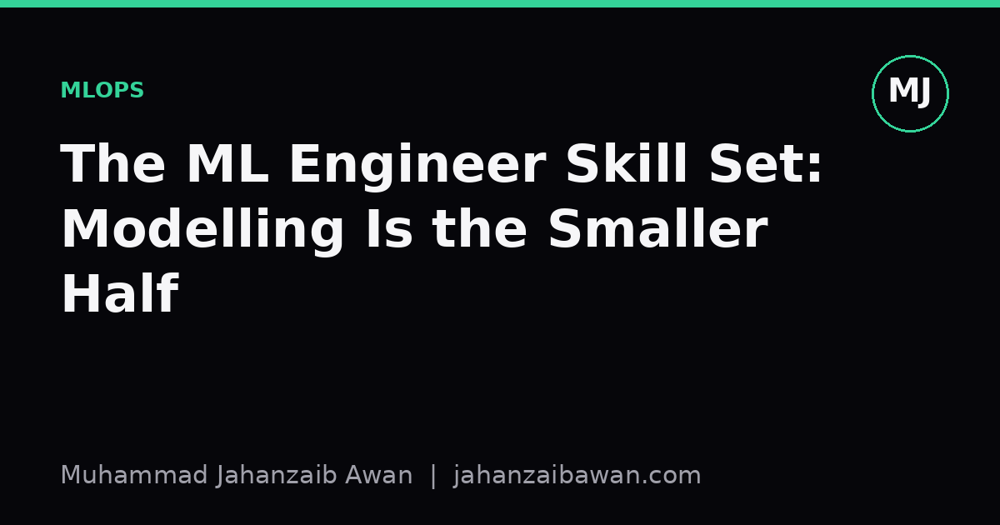
The ML Engineer Skill Set: Modelling Is the Smaller Half
Training a model is the easy bit. The real work is data quality, leakage-aware evaluation, and keeping the system honest after deployment.
22 Jul 2026 Read →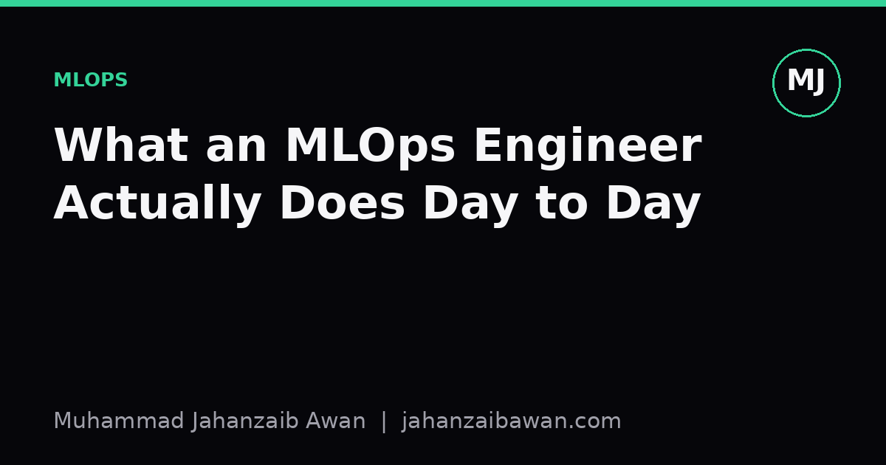
What an MLOps Engineer Actually Does Day to Day
MLOps is less about fancy tooling and more about babysitting data, retraining models responsibly, and catching silent failures before customers do.
21 Jul 2026 Read →An MLOps Roadmap for Engineers Coming From Research
A practical MLOps roadmap for researchers moving into engineering: version control, pipelines, monitoring, and the mindset shift that ties it together.
21 Jul 2026 Read →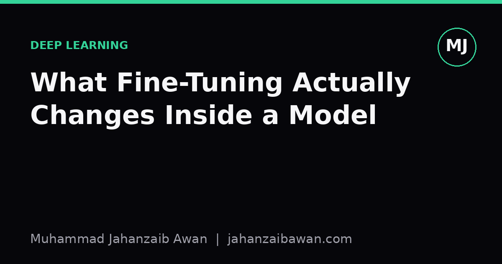
What Fine-Tuning Actually Changes Inside a Model
Fine-tuning does not rewrite a model, it nudges it. Here is what actually shifts inside the weights and why that distinction matters for evaluation.
20 Jul 2026 Read →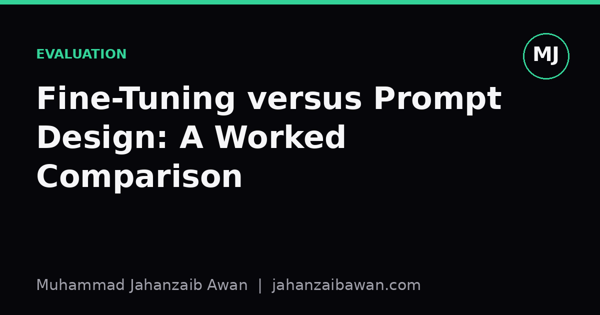
Fine-Tuning versus Prompt Design: A Worked Comparison
A small worked example shows where fine-tuning earns its keep and where good prompt design gets you nearly as far, faster and cheaper.
20 Jul 2026 Read →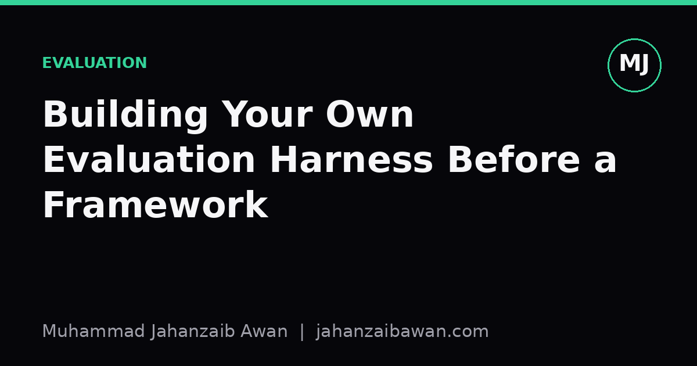
Building Your Own Evaluation Harness Before a Framework
Frameworks hide the plumbing of evaluation. Build your own harness first so you know precisely what a metric means before you trust one.
19 Jul 2026 Read →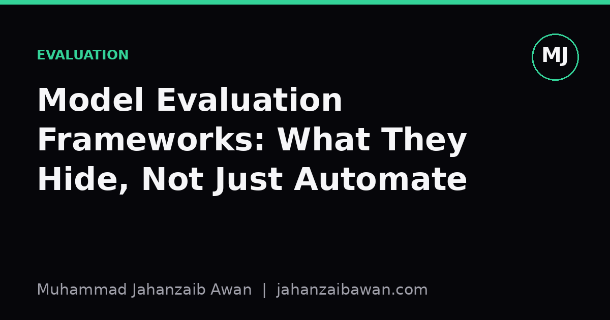
Model Evaluation Frameworks: What They Hide, Not Just Automate
Evaluation frameworks automate metrics, splitting, and reporting, but they can quietly hide leakage, weak baselines, and the wrong question entirely.
19 Jul 2026 Read →Choosing Between Classical and Deep Computer Vision
A practical guide to deciding when classical vision techniques beat deep learning, and when they don't, based on data, constraints, and honest evaluation.
18 Jul 2026 Read →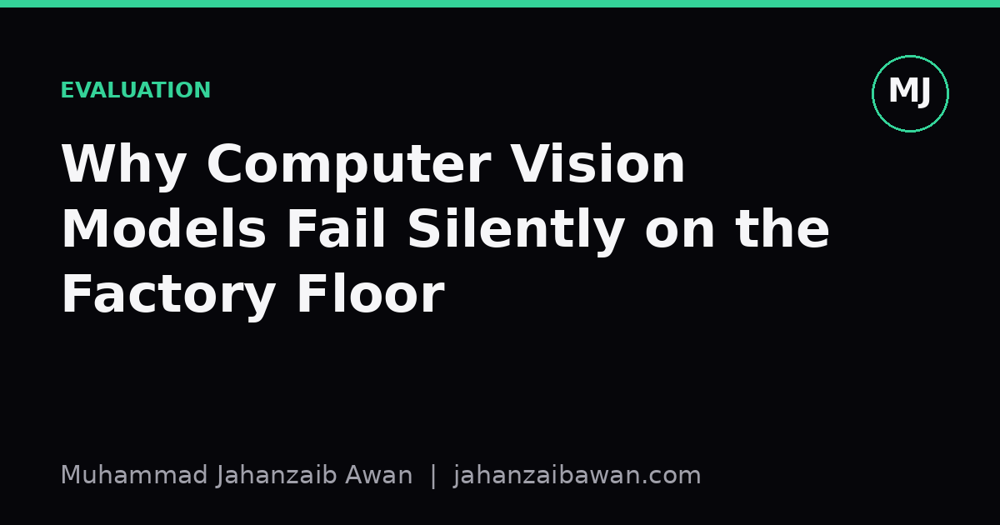
Why Computer Vision Models Fail Silently on the Factory Floor
High lab accuracy hides a fragile model. On the factory floor, distribution shift and leakage-prone splits let vision systems fail quietly, with no crash to warn you.
18 Jul 2026 Read →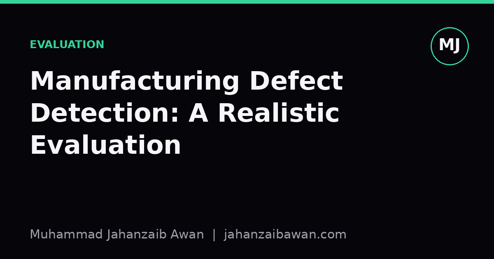
Manufacturing Defect Detection: A Realistic Evaluation
A high accuracy score means little for rare defects. Here is how to evaluate a manufacturing vision model the way production actually needs.
17 Jul 2026 Read →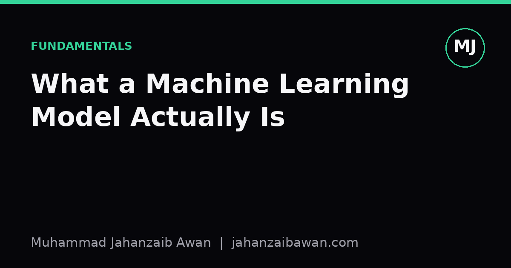
What a Machine Learning Model Actually Is
A machine learning model is a function with adjustable parameters, tuned by data to reduce error. One worked example makes this concrete.
17 Jul 2026 Read →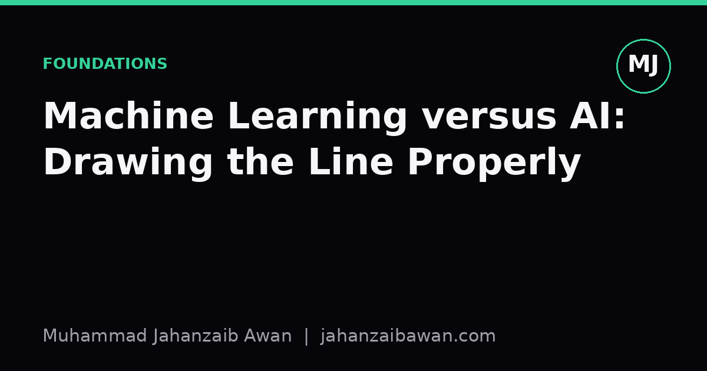
Machine Learning versus AI: Drawing the Line Properly
AI is the goal, machine learning is one method for reaching it. Confusing the two leads to bad hiring briefs and worse product decisions.
16 Jul 2026 Read →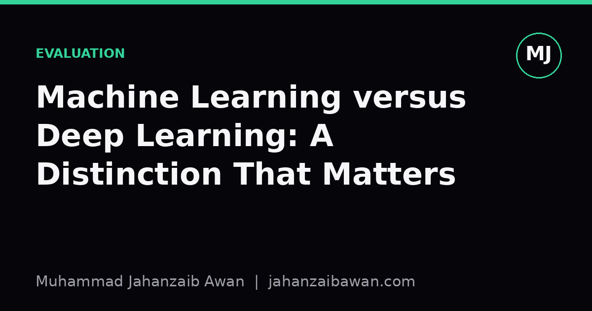
Machine Learning versus Deep Learning: A Distinction That Matters
Deep learning is a subset of machine learning, not a replacement for it. Confusing the two leads to wasted compute and weaker baselines.
16 Jul 2026 Read →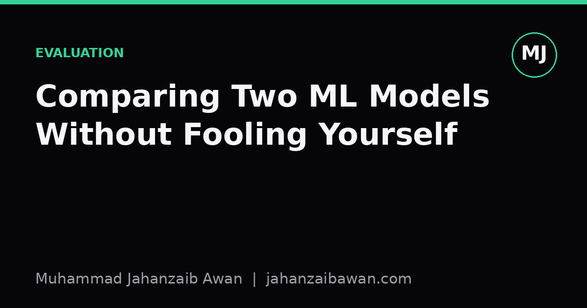
Comparing Two ML Models Without Fooling Yourself
A higher accuracy score does not mean a better model. Here is a practical, honest way to test whether the difference between two models is real.
15 Jul 2026 Read →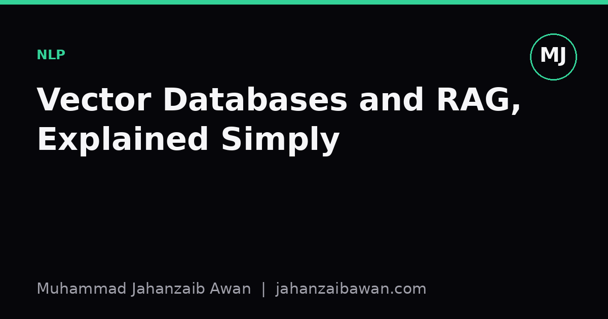
Vector Databases and RAG, Explained Simply
How embeddings and vector search let language models look things up instead of guessing, and why the plumbing matters more than the hype.
15 Jul 2026 Read →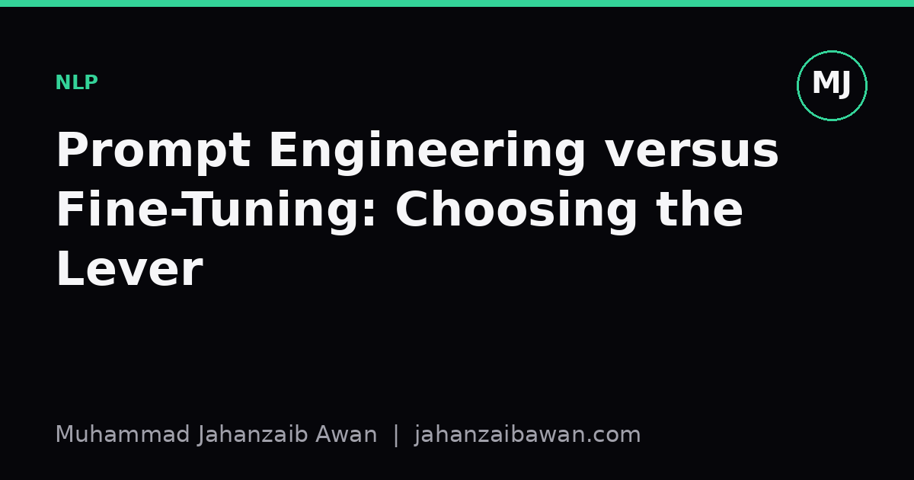
Prompt Engineering versus Fine-Tuning: Choosing the Lever
A practical guide to choosing between prompt engineering and fine-tuning, with a worked example showing when each lever actually pays off.
14 Jul 2026 Read →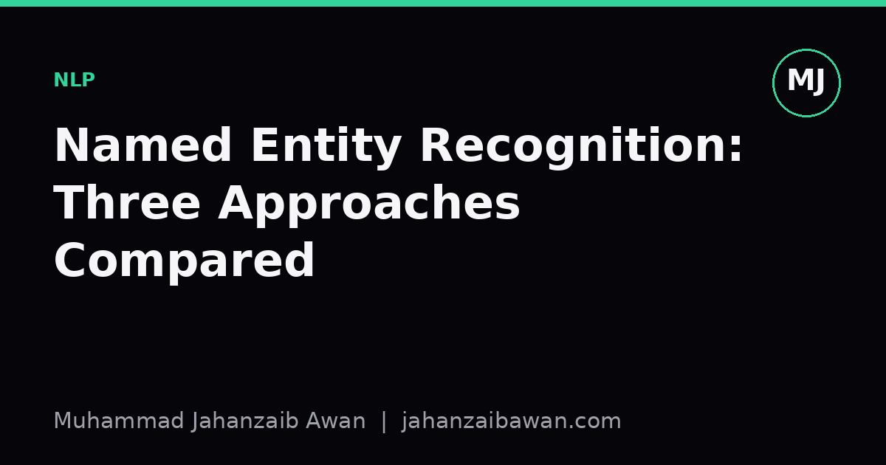
Named Entity Recognition: Three Approaches Compared
A practical comparison of rule-based, statistical, and neural NER, with a worked example showing where each approach wins and where it quietly fails.
14 Jul 2026 Read →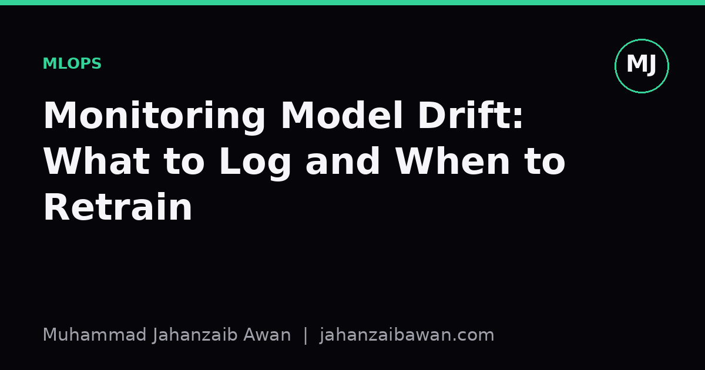
Monitoring Model Drift: What to Log and When to Retrain
Drift monitoring is not a dashboard of pretty charts. It is a disciplined logging habit and a retraining trigger you can defend with evidence.
13 Jul 2026 Read →A Practical Checklist for Notebook to Production
A working checklist for taking a model out of a notebook safely, covering data leakage, baselines, monitoring, and the questions reviewers should always ask.
13 Jul 2026 Read →Image Augmentation: What Actually Generalises
Most augmentation choices are copied from tutorials rather than justified. Here's how to test which ones actually improve generalisation for your task.
12 Jul 2026 Read →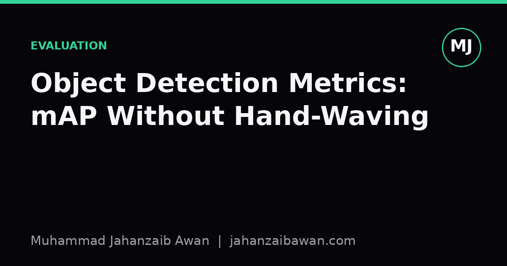
Object Detection Metrics: mAP Without Hand-Waving
mAP gets thrown around as a single number, but few people can actually derive it. Here is the arithmetic behind it, worked through by hand.
12 Jul 2026 Read →Building a Computer Vision Pipeline That Survives Shift
High test accuracy means little if your test set secretly resembles your training set. Here is how to build vision pipelines that hold up when the world changes.
11 Jul 2026 Read →Evaluating LLMs Beyond Accuracy
A single accuracy number hides three separate failure modes in LLMs: unhelpfulness, harm, and hallucination. Each needs its own metric and its own test set.
11 Jul 2026 Read →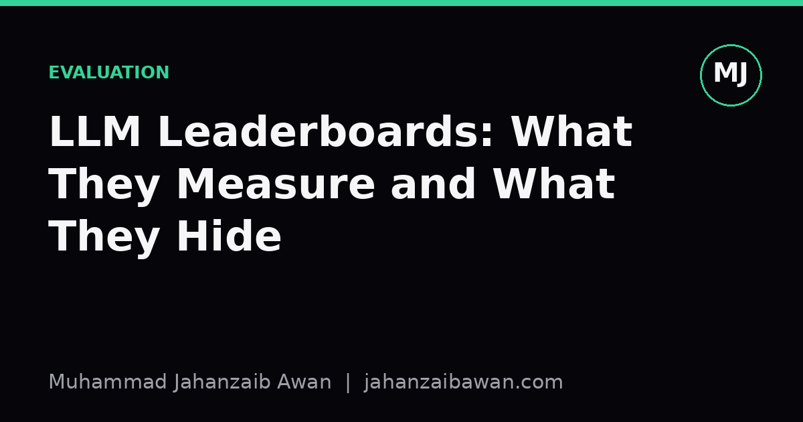
LLM Leaderboards: What They Measure and What They Hide
A high leaderboard rank is not the same as a trustworthy model. Here is what the numbers quietly leave out.
11 Jul 2026 Read →Feature Stores: Real Problem or Just Ceremony?
Feature stores promise consistency between training and serving, but the value depends entirely on whether your pipeline actually has that problem.
11 Jul 2026 Read →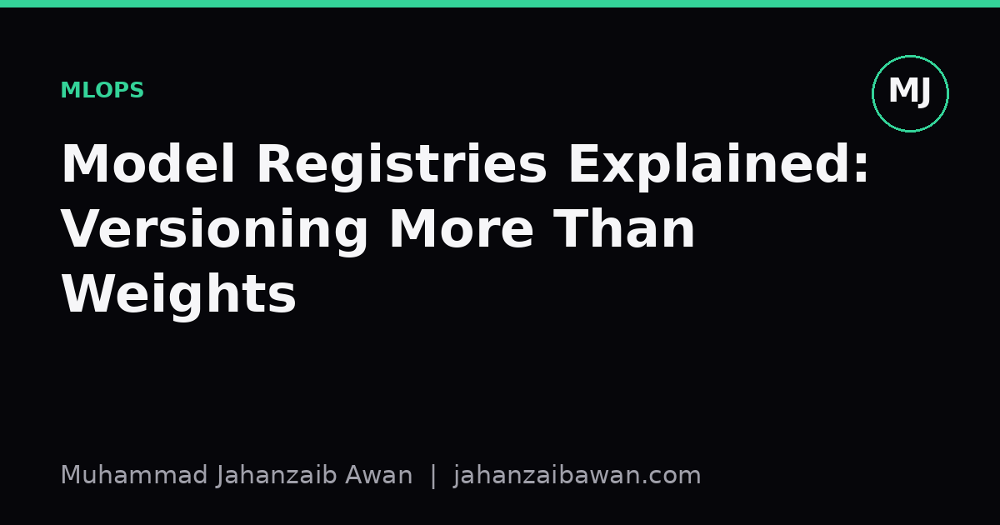
Model Registries Explained: Versioning More Than Weights
A weights file is not a model. Here is what a proper model registry actually needs to track, and why skipping it quietly breaks reproducibility.
10 Jul 2026 Read →
What an MLOps Pipeline Actually Needs Before Kubernetes
Kubernetes solves a scaling problem you probably don't have yet. Here's what to fix first, from data versioning to leakage-aware evaluation.
10 Jul 2026 Read →
SMOTE and Synthetic Data: When It Backfires
SMOTE fixes imbalance in theory but often just teaches your model to memorise interpolated noise, especially when it leaks into your test set.
10 Jul 2026 Read →
Overfitting the Validation Set Through Too Many Experiments
Run enough experiments against one validation set and you stop measuring generalisation, you start measuring luck. Here is why, with numbers.
9 Jul 2026 Read →
Reproducibility: Seeds, Configs, and Runs You Can Rerun
Most 'irreproducible' ML results fail for boring reasons: unpinned seeds, missing configs, undocumented data splits. Here is how to fix that properly.
9 Jul 2026 Read →
Data Augmentation That Helps vs Augmentation That Leaks
Augmentation only helps when it happens after splitting. Get the order wrong and your validation score becomes a lie.
9 Jul 2026 Read →
Reading a Confusion Matrix Beyond Accuracy
Accuracy is a single number that can lie to you. A confusion matrix, read properly, tells you where and why your model actually fails.
8 Jul 2026 Read →
BLEU and Its Limits for Evaluating Generated Text
BLEU counts matching word chunks, not meaning. Here is why that gap matters and how to evaluate generated text more honestly.
8 Jul 2026 Read →
Perplexity: What It Rewards and What It Ignores
Perplexity tells you how well a model predicts held-out text, but it says nothing about coherence, factuality, or usefulness. Here is what it quietly rewards and ignores.
7 Jul 2026 Read →
Tokenization Choices and Why They Change Your Results
Tokenization looks like plumbing, but it decides what your model can see. Get it wrong and no amount of tuning will fix it.
7 Jul 2026 Read →
Transfer Learning: Freeze, Fine-Tune, or LoRA?
Freezing, full fine-tuning, and LoRA all solve transfer learning differently. Here is how to choose based on data size, compute, and risk of overfitting.
6 Jul 2026 Read →
Gradient Clipping and Exploding Gradients in RNNs
A practical look at why RNN gradients explode over long sequences, and how norm-based clipping keeps training stable without hiding real bugs.
6 Jul 2026 Read →
Learning Rate: The First Hyperparameter to Tune
Tune the learning rate before anything else: it decides whether your model converges, stalls, or blows up entirely.
6 Jul 2026 Read →
Dropout as an Ensemble, Not a Magic Switch
Dropout works because it approximates ensembling thousands of thinned networks, not because randomness alone regularises. Here is the intuition, worked through with numbers.
6 Jul 2026 Read →
Why Batch Normalization Helps, and When It Hurts
Batch norm speeds up training by taming shifting activations, but it leans on batch statistics that can betray you at small batch sizes or test time.
5 Jul 2026 Read →
Attention, Intuitively: Queries, Keys, and Values
Attention is a soft lookup table: queries ask, keys answer, values deliver. Here is that idea made concrete with numbers.
5 Jul 2026 Read →
Embeddings 101: What Cosine Similarity Actually Measures
Cosine similarity measures angle, not distance. Understanding that difference will save you from subtle bugs in retrieval and clustering systems.
4 Jul 2026 Read →
Train, Validation, Test: Why Three Splits Not Two
Two splits let your decisions leak into your test score. A validation set is what keeps your final number honest.
4 Jul 2026 Read →
The Trap of Optimizing the Wrong Metric
High accuracy can hide a useless model. Here is why the metric you optimize quietly decides what your system actually learns.
4 Jul 2026 Read →
Feature Scaling: Which Models Care and Which Do Not
A practical guide to why distance and gradient based models demand scaled features while tree based models shrug them off entirely.
3 Jul 2026 Read →
Class Weights vs Resampling for Imbalanced Data
Class weights and resampling both target imbalance, but they change different things. Here is how to pick the right one and evaluate it honestly.
3 Jul 2026 Read →
Early Stopping vs Regularization: Do You Need Both
Early stopping and regularization both fight overfitting, but they work through different mechanisms. Understanding the difference tells you when you need one, the other, or both.
2 Jul 2026 Read →
A tuned GRU beat LoRA-fine-tuned GPT-2, here's why
A 117M-parameter transformer lost to a small recurrent net on every metric. Not because transformers are bad, but because the baseline was done properly.
20 Jun 2026 Read →
How a naïve train/test split inflated my UAV F1 by 0.5
The same model, the same data, and a macro-F1 that fell from 0.78 to 0.26 the moment I split the data honestly. A walk through the most expensive bug in ML.
12 Jun 2026 Read →